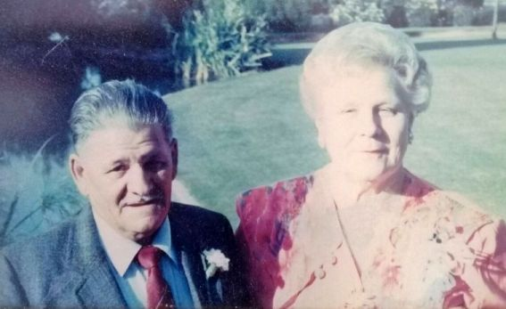

|
Vier geslagte Hendrik Jacobus Henning. b9.c3.d3. Hendrik Jacobus * 25-4-1843, Hendrik Jacobus * 1867 (e3), Hendrik Jacobus * 18-7-1889 (f2) en Hendrik Jacobus * 3-11-1924 (g5)
Beskou lys van mense op foto
|
 |
b9.c3.d3.e3.f2.g5. Hendrik Jacobus Henning *3-11-1924 en sy vrou Maria Petronella (Piemp) (gebore Alers) *25-5-1922
Beskou lys van mense op foto